class: center, middle ## Structural insights into binding of therapeutic channel blockers in NMDA receptors Chou et al., Nature structural & molecular biology 2022 .center[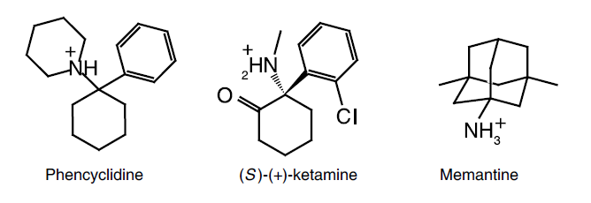] .credits[Chloe Geoffroy - Paoletti’s team Lab Meeting 21/09/2022] .affiliations[ ] --- <h3> Introduction: Channel blockers, diverse array of clinical effects </h3> <div class=" flex jsce "> <div class="flex col center "> <div></div> <div> <h4> <strong>Memantine</strong> </h4> <p>Treatment of moderate to severe <strong> Alzheimer’s disease </strong> <br> Under clin. trial for epileptic encephalopathy</p> <p> <strong>Well tolerated</strong> </p> </div> </div> <div class=" flex col center "> <div></div> <div> <h4> <strong>Ketamine</strong> </h4> <p>Initially approved as an anesthetic <br> Efficacy as a <strong>rapid antidepressant</strong> <br> and in treatment of pain </p> <p>Drug of abuse, <strong>poorly tolerated</strong> (psychotomimetic side effects at therapeutic doses) </p> </div> </div> <div class=" flex col center"> <div>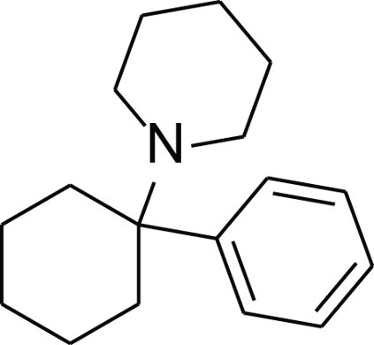</div> <div> <h4> <strong>PCP</strong> </h4> <p>Antidepressant properties </p> <div style="height: 20px"> </div> <p>Very important <strong>psychotomimetic side effects</strong> </p> </div> </div> </div> <div style="height: 90px"> </div> <div style="text-align: center; display: flex; flex-direction: column; justify-content:flex-end;"><h4> <strong> Why ? </strong> </h4></div> --- <h3> Introduction: Channel blockers, diverse array of clinical effects </h3> <h4>Many hypothesis: <br> <u>Ex1</u> - Pharmacological differences between memantine and ketamine</h4> <div class=" flex jsca "> <div class="flex col center "> <div></div> <div> <div style="height: 140px"> </div> <p> <strong>Other targets</strong> </p> <div style="height: 10px"> </div> <p> <strong>Effects of drug <br> metabolites </strong> </p> </div> </div> <div class=" flex col center "> <div></div> <div> <h4> <strong>Memantine</strong> </h4> <div style="height: 5px"> </div> <p>acetylcholine Rs <br> serotonin 5-HT3 Rs</p> <div style="height: 0.5px"> </div> <p>No active metabolites reported</p> </div> </div> <div class=" flex col center"> <div></div> <div> <h4> <strong>Ketamine</strong> </h4> <div style="height: 0.002%"> </div> <p>dopamine D2 Rs <br> serotonin 5-HT2Rs <br> HCN1 channels</p> <p>Norketamine, hydroxynorketamine</p> </div> </div> </div> <div style="height: 60px"> </div> <div style="font-size: 60%;"> Johnson et al., <i>Curr. Op. Pharmacol.,</i> 2015 </div> --- <h3> Introduction: Channel blockers, diverse array of clinical effects </h3> <h4>Many hypothesis: <br> <u>Ex2</u>-Drugs’ mechanism of interaction with NMDARs</h4> <div class=" flex jsca "> <div class="flex col center "> <div></div> <div> <div style="height: 140px"> </div> <div style="height: 10px"> </div> <p> Preservation of physiological <br> NMDAR function <br> --> fewer side effects </p> </div> </div> <div class=" flex col center "> <div></div> <div> <h4> <strong>Memantine</strong> </h4> <div class="cadre2"> <p>Partial trapping <br> antagonist (50-70%) </p> <div style="height: 1px"> </div> <p>Fast off rate</p> </div> <p>Promote channel closure</p> <p>Binding to additional superficial site</p> </div> </div> <div class=" flex col center"> <div></div> <div> <h4> <strong>Ketamine</strong> </h4> <div class="cadre"><p>High trapping antagonist <br> (86%) </p> <p>Slow off rate</p></div> <div style="height: 50px"> </div> <p>Possible access through membrane</p> </div> </div> <div class="flex col center "> <div></div> <div> <div style="height: 140px"> </div> <div style="height: 25px"> </div> <p> Could explain in part the <br> psychomimesis </p> </div> </div> </div> <div style="font-size: 60%;"> Song et al., <i>Nature,</i> 2018 <br> Glasgow et al., <i>J. Neurosci.,</i> 2017 <br> Phillips et al., <i>Brain Neurosci.,</i> 2020 <br> Orser et al., <i>Anesthesiology.,</i> 1997 <br> </div> --- ### Cryo-EM structure and MD simulations of channel blockers <video width="90%" height="100%" controls><source src="./bisou.mp4" type="video/mp4"></video> --- ## How do we become intelligent ? .center[<img src="images/learning1.png" width="85%" />] .center[**Learning by trial and error**] --- ## How do we become intelligent ? .center[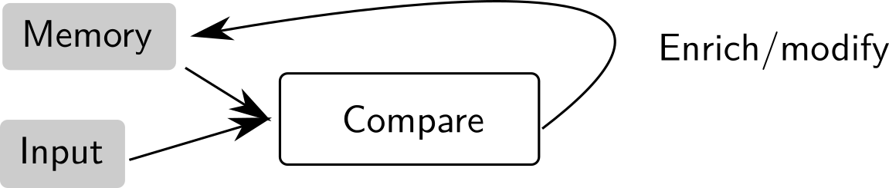] .center[**Learning by organizing new knowledge**] --- ## How do we become intelligent ? .center[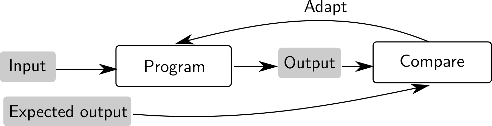] .center[**Learning by comparison with a reference**] --- ### What do we know about intelligence ? - Psychology/behavior study: learning processes - Neuroscience: better understanding of the brain - Humans use the three type of learning above (trial & error, knowledge, reference) .left-column[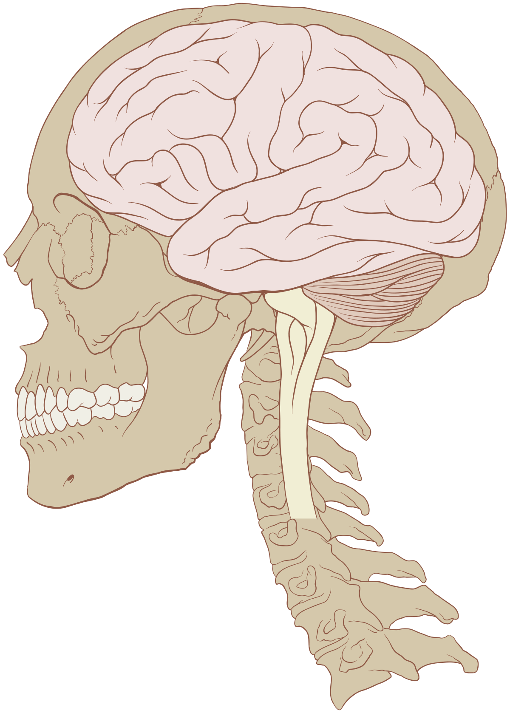] .right-column[<img src="images/neuron.png" width="100%" />] --- ## How can a machine learn ? Supervised learning process .center[] Implementing a program that learns from supervision .center[<img src="images/machine_learning.png" width="85%" />] --- ## Machine learning as a field - A subfield of "artificial intelligence" (computer science), where *intelligence* is acquired from *data* .center[<img src="images/machine_learning.png" width="85%" />] - Extract information from data: relies on statistics - Training relies on optimization and mathematics --- ## A brief history #### AI boom 1950-1970 - Perceptron: a first attempt to classify images (1958) - AI at the time was mostly symbolic reasoning (not from data) - AI booming, until 1970 #### AI winter 1970-1980 - Too hard a problem ! Researcher were over optimistic. <div class='column'>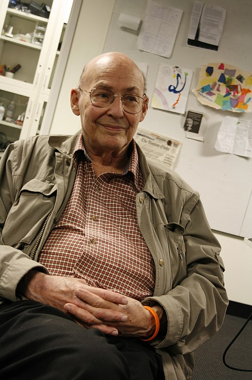<br>Marvin Minsky</div> <div class='column'><br>Frank Rosenblatt</div> <div class='column'><img src="images/shannon.jpg" width="60%" /><br>Claude Shannon</div> --- ## A brief history #### 1980s : Progress in modelling: neural-networks, training techniques .center[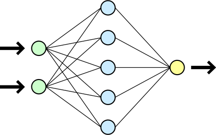] #### 1990s-2000s: - AI shifts from symbolic reasoning to machine learning (from data) - Progress in statistics: what can be learned ? - Models simple enough to be analysed (SVM/generalized linear models) - First applications (character recognition) - Progress in behavior modelling: *Netflix recommendation* --- ## A brief history #### The 2010 turn: - Large datasets are acquired (ImageNet + Web expansion) - Progress in parallel computing (GPU) #### After 2010: new AI / deep learning boom - Complex (deep) models start working for image classification (2012) - For text analysis (first 2014 and re-boom in 2017) - Audio processing (2016: speech recognition) - Scene understanding, face recognition (2014--) - Games: solving ATARI (2015--), Go (2016), ... - Biology: AlphaFold (2020) --- ## The new boom explained - Computational power .center[<img src="images/gpu_tpu.png" width="35%" />] - Powerful programming frameworks .center[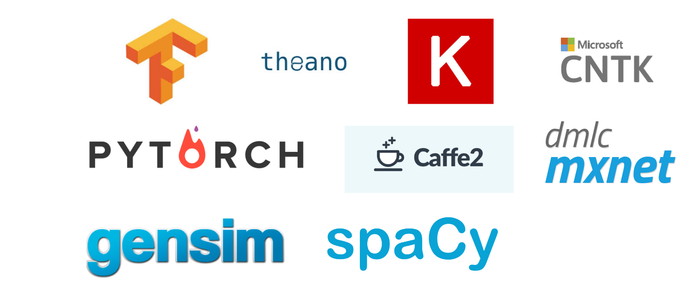] --- ## The new boom explained - Available datasets and growing data corpus - Money and people .center[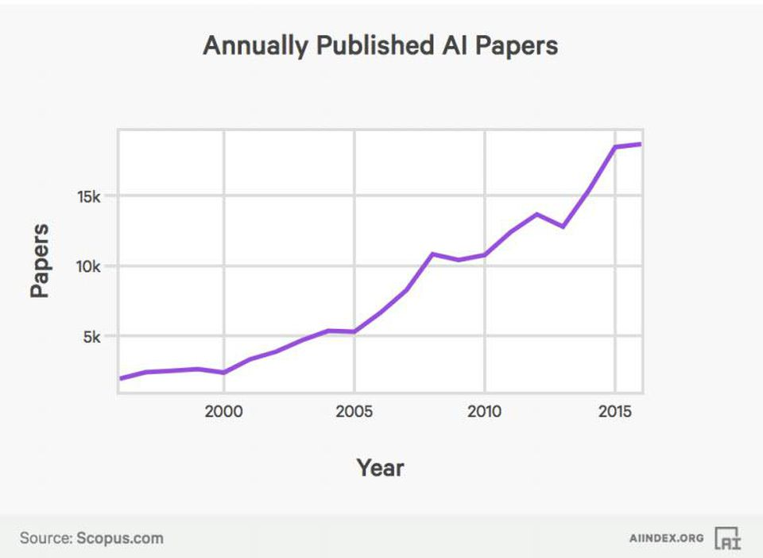 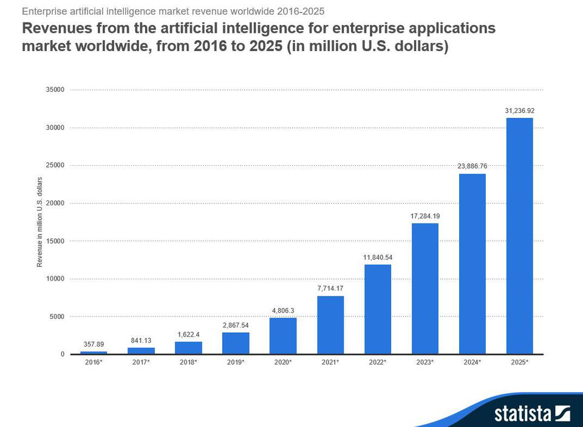] - Privately funds from the GAFAM, public funding from Chinese governement --- ## Machine learning is now everywhere 1. Computer vision 2. Speech processing 3. Text understanding 4. Game playing 5. Behavior modelling --- ## Image processing .center[ <img src="images/images.png" style="width: 720px;" /> ] --- ## Image processing .center[ 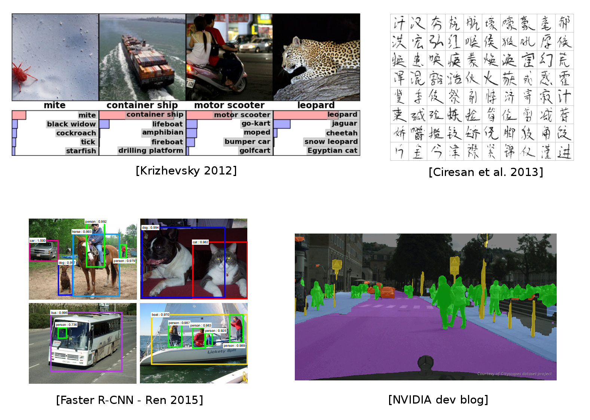 ] .credits[Slide courtesy of https://github.com/m2dsupsdlclass/lectures-labs] --- ## Image processing .center[ <img src="images/vision2.png" style="width: 720px;" /> ] .credits[Slide courtesy of https://github.com/m2dsupsdlclass/lectures-labs] --- ## Image processing: the good .center[ ] --- ## Image processing: the bad .center[ ] --- ## Image processing: the ugly .center[ ] --- ## Text processing .center[ <img src="images/text.png" style="width: 720px;" /> ] --- ## Text processing .center[ 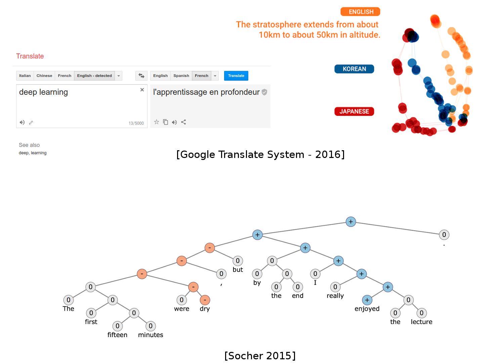 ] .credits[Slide courtesy of https://github.com/m2dsupsdlclass/lectures-labs] --- ## Text processing - GPT-3 [2020] requires only a few examples of a task to generalize. .center[ <img src="images/gpt3.jpg" style="width: 500px;" /> ] --- ## Text/speech processing .center[ <img src="images/nlp2.png" style="width: 720px;" /> ] .credits[Slide courtesy of https://github.com/m2dsupsdlclass/lectures-labs] --- ## Combining modalities .center[ <img src="images/nlp_vision.png" style="width: 720px;" /> ] .credits[Slide courtesy of https://github.com/m2dsupsdlclass/lectures-labs] --- ## Generating false data .center[ 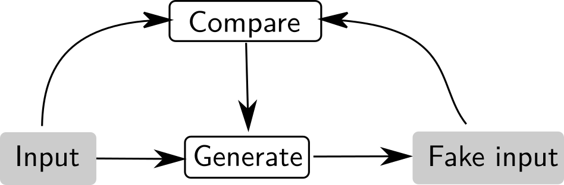<br> ] --- ## Generating false data .center[ <img src="images/nvidia_celeb.jpg" style="width: 400px;" /><br> [StyleGAN2 2018] ] .center[ <img src="images/WaveNet.gif" style="width: 400px;" /><br> [WaveNet 2017] ] --- ## Generating false data <iframe id="ytplayer" type="text/html" width="640" height="360" src="https://www.youtube.com/embed/p5U4NgVGAwg" frameborder="0"/> --- ## Combining modalities to generate fake data Generate an image from natural language (Dalle-2, Make-A-Scene, Imagen) .center[ 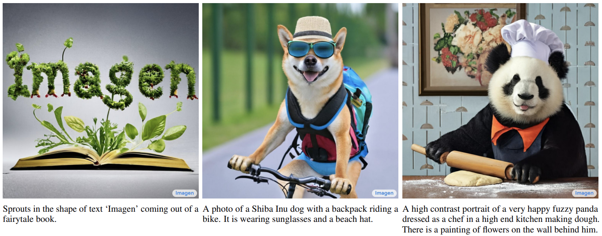 ] .credits[Images courtesy of Imagen] --- ## ML for other sciences .center[ <img src="images/dermato.png" style="width: 720px;" /> ] --- ## ML for other sciences .center[ 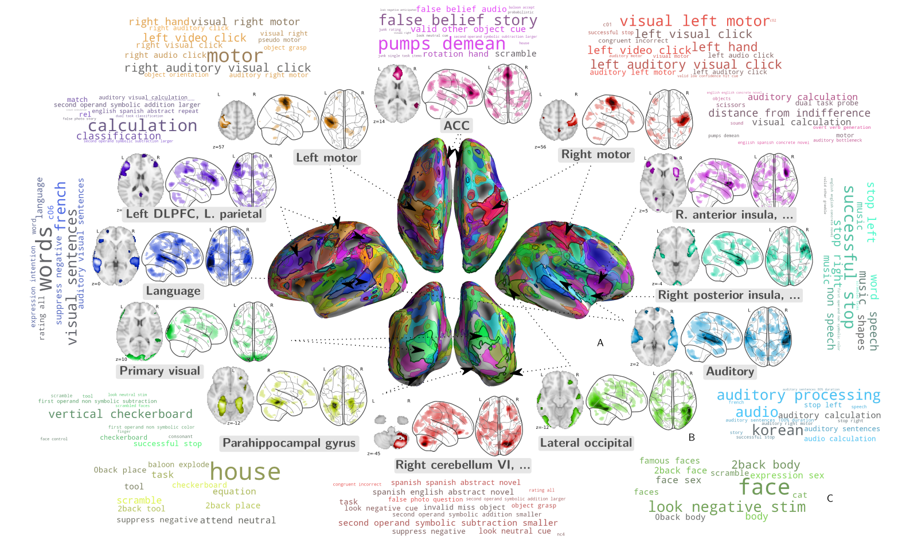 [Brain decoding, M et al. 2018] ] --- ## Playing games .center[ <img src="images/rl.png" style="width: 720px;" />] --- ## Playing games .center[ <img src="images/games.png" style="width: 720px;" />] --- ## Influencing human behavior via profiling .center[ 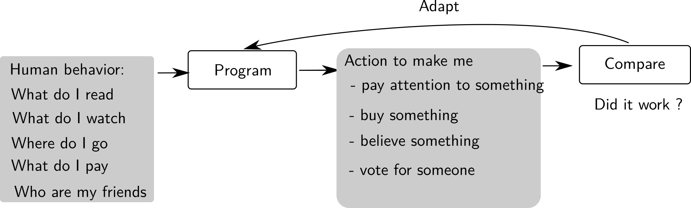] --- ## Influencing human behavior via profiling .center[ ] .credits[Criteo website] --- ## Influencing human behavior via profiling .center[ 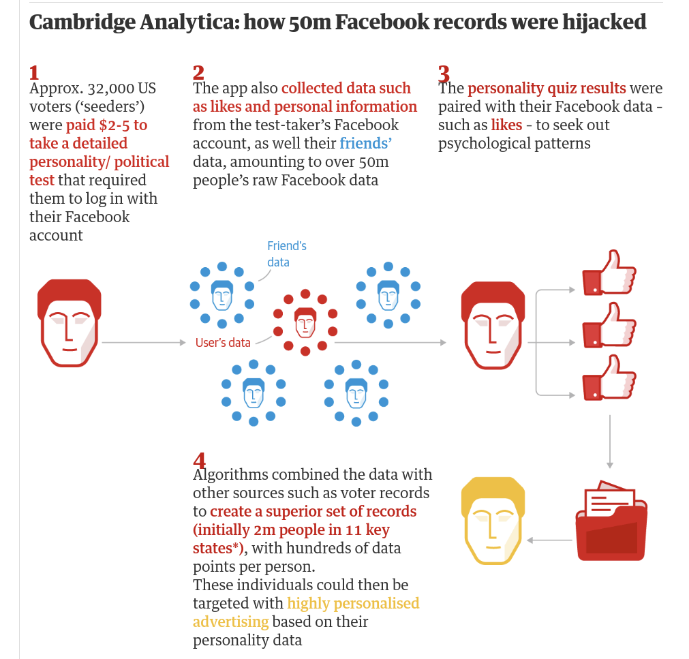] --- ## Biology Main example: AlphaFold predicts the 3D structure of a protein from its sequence of amino-acids. .center[ <img src="images/alphafold.png" style="width: 400px;" />] .credits[Illustration from AlphaFold Protein Structure DB] --- ## Limit of machine learning - Model trained from data: as biased as the data itself - facial recognition systems works less well on minorities - CV rating systems learn socio-economic biases - Predictive model may fail on slightly perturbated input - Non robust, hence non deployable - As of today ! --- ## Next course - The principles of machine learning